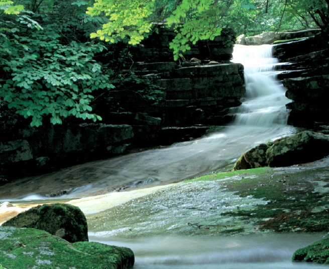

용하계곡

주요특징 및 설명
유형: 계곡
위치: 충청북도 제천시 덕산면 월악리 일원
주요 특징
용하계곡은 월악산 남쪽의 만수봉과 동남쪽의 문수봉 사이에 발달한 계곡이다. 약 16㎞에 걸쳐 이어진다.
조선 후기 유학자인 의당 박세화가 용하계곡의 빼어난
자연경관을 보고 용하구곡을 명명하였다.
용하구곡(用夏九曲)의 세부명칭
수문동폭포, 수곡용담, 관폭대, 청벽대, 선미대, 수룡담, 활래담, 강서대, 수렴선대